Wie es im App Store aussähe
Die drei Apps als Store-Seiten nachgebaut – mit den echten Symbolen, den echten Fassungsnummern und Bildschirmfotos, die die Apps selbst aufgenommen haben. Erfunden ist nur, was es noch nicht gibt: Untertitel, Beschreibungen, Kategorie, Preis. Genau das ist markiert.
Das hier ist eine Attrappe. Sie liegt in Ihrem eigenen Projekt, ist nicht mit Apple verbunden und reicht nichts ein. Ob die drei Apps in dieser Form überhaupt in den Store dürfen, ist eine eigene Frage – sie steht unten unter Die eine große Hürde und ist unbeantwortet.
Von Ihnen
Alle ansehen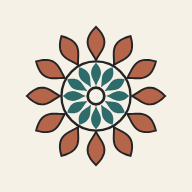
Mandala Atelier Zeichnen mit Symmetrie LADEN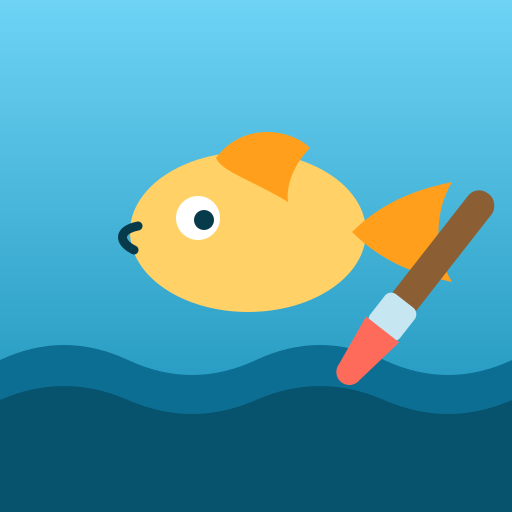
Malstudio Zeichnen lernen durch Spielen LADEN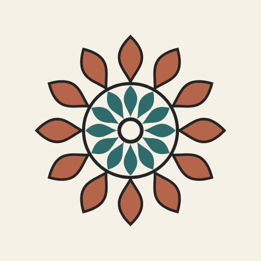
Mandala Atelier
Zeichnen mit Symmetrie
Anbietername
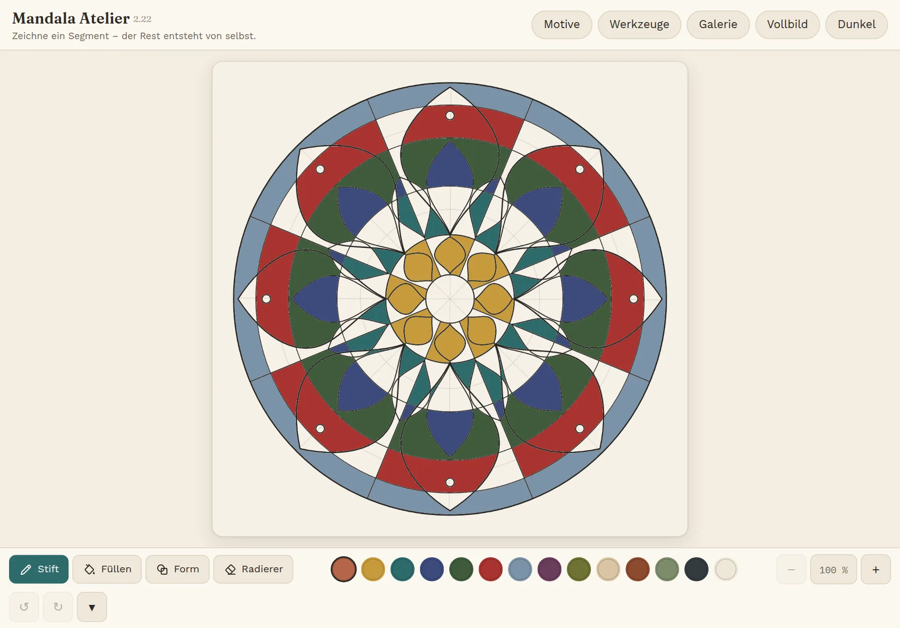
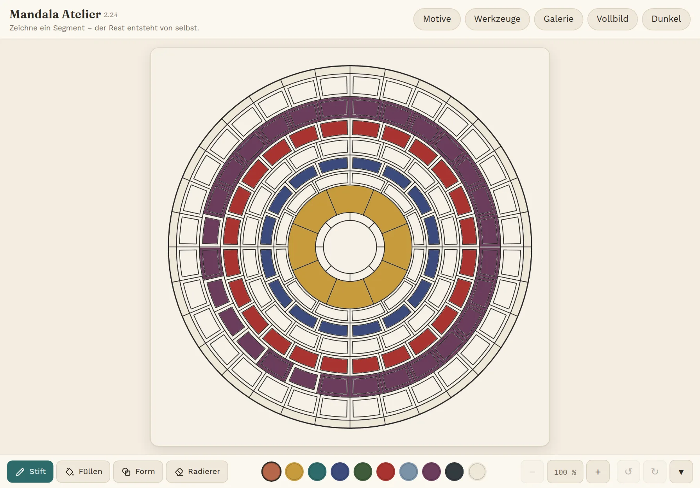
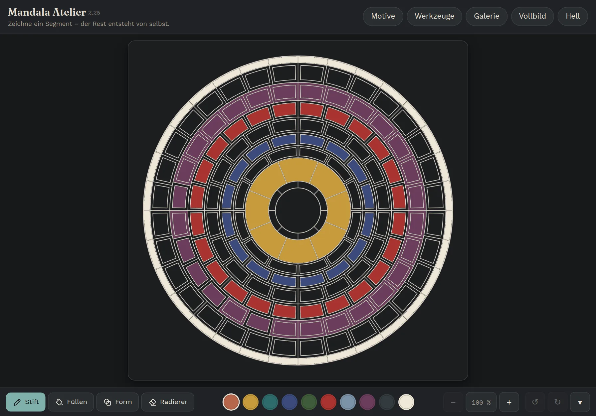
Version 2.22Vor 3 Tagen
Die Farbwelten lassen sich jetzt mitten in der Arbeit wechseln, ohne dass Gefärbtes verlorengeht. Dazu vier neue Vorlagen und ein ruhigerer Druckbogen.
Beschreibung
Eine Handbewegung, achtundvierzigfach. Sie zeichnen ein einziges Segment, und das Atelier spiegelt den Rest – daraus entsteht in Sekunden eine Ordnung, für die man von Hand einen Abend bräuchte.
34 Vorlagen liegen bereit, von der strengen Rosette bis zum Grundriss mit Vorhöfen und Kammern. Wer lieber selbst anfängt, nimmt das leere Blatt und stellt die Achsenzahl ein. Gefärbt wird mit gedeckten Pigmenten in sechs Farbwelten; ein Tippen füllt ein Feld, ein zweites das ganze Muster.
Keine Sterne, keine Pokale, keine Serien. Wer hier malt, will abschalten – deshalb gibt es nichts zu gewinnen und nichts zu verpassen.
Alles bleibt auf dem Gerät: keine Konten, keine Werbung, keine Verbindung nach draußen. Die App arbeitet vollständig ohne Netz.
Bewertungen und Rezensionen
Noch keine Bewertungen. Sie entstehen erst nach der Veröffentlichung – vorher lässt sich hier nichts vorbereiten.
App-Datenschutz
Informationen
| Anbieter | Name, unter dem verkauft wird |
|---|---|
| Größe | 693 kB |
| Kategorie | Grafik & Design |
| Kompatibilität | iPad, iPadOS 16.0 oder neuer |
| Sprachen | Deutsch |
| Altersfreigabe | 4+ |
| Copyright | © 2026 … |
| Preis | Gratis |
| Datenschutzrichtlinie | Adresse einer Seite |
| Support | Adresse einer Seite |
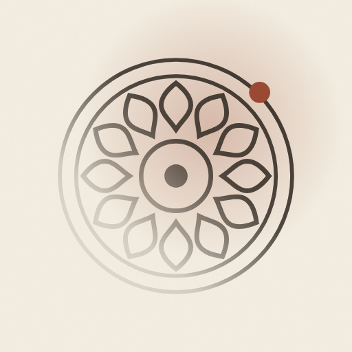
Blatt
Streichen, bis etwas kommt
Anbietername
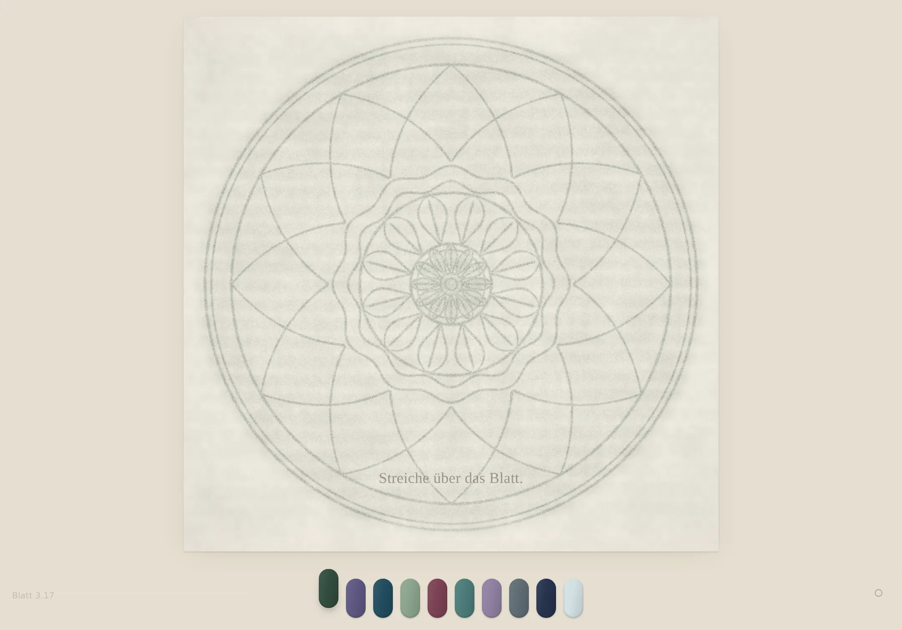
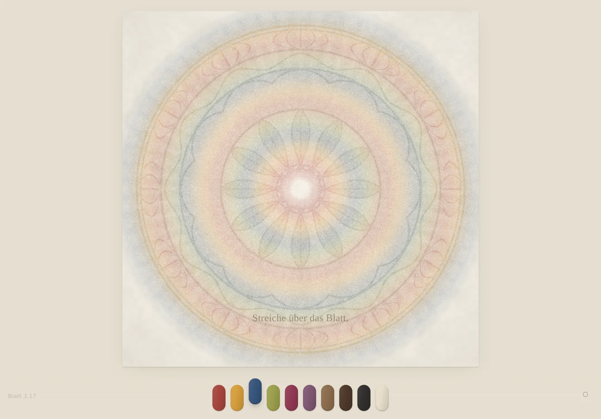
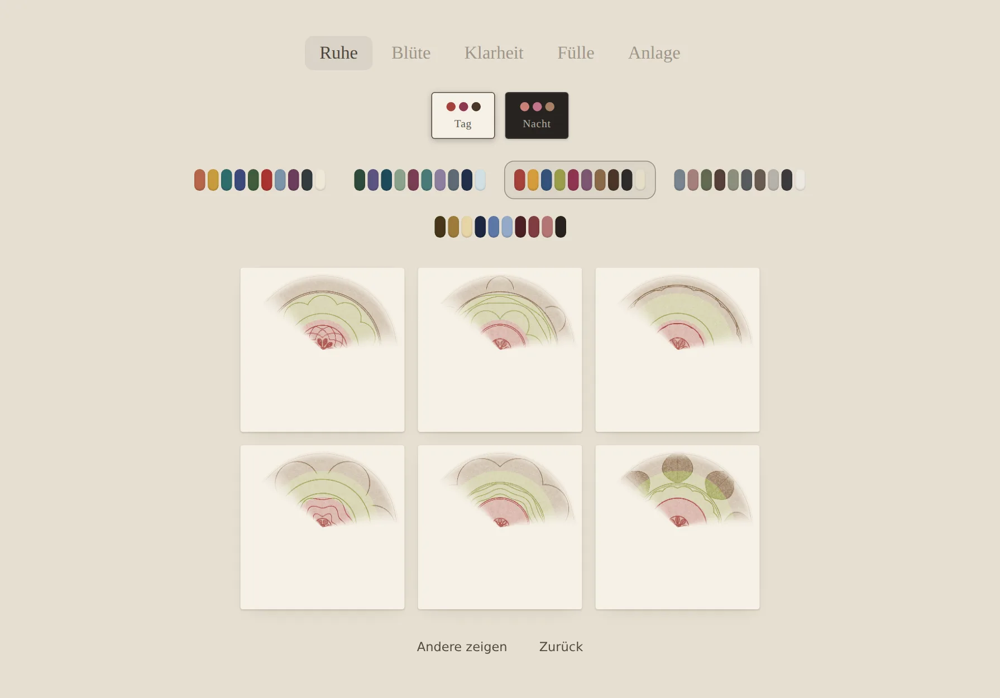
Version 3.15Vor 3 Tagen
Der Griff trennt sauberer zwischen leichter und fester Hand: Wer zügig streicht, holt zuerst die Zeichnung hervor und kann danach in Ruhe ausmalen.
Beschreibung
Ein leeres Blatt, unter dem etwas liegt. Streichen Sie darüber, und ein Mandala kommt hervor – nicht gezeichnet, sondern hervorgerieben, wie bei einer Frottage über Papier.
Die Hand entscheidet, wieviel kommt. Eine leichte, zügige Bewegung streift nur die Grate und legt die Linien frei; eine langsame, verweilende greift bis in die Mulden und füllt die Flächen. Zwei Bewegungen, ein Werkzeug, kein Menü.
Jedes Blatt ist neu und keines wiederholt sich. Fünf Stimmungen geben den Grundton – von der ruhigen, weiten Ordnung bis zum dicht bewachsenen Blatt.
Alles bleibt auf dem Gerät: keine Konten, keine Werbung, keine Verbindung nach draußen. Die App arbeitet vollständig ohne Netz.
Bewertungen und Rezensionen
Noch keine Bewertungen.
App-Datenschutz
Informationen
| Anbieter | Name, unter dem verkauft wird |
|---|---|
| Größe | 740 kB |
| Kategorie | Lifestyle |
| Kompatibilität | iPad, iPadOS 16.0 oder neuer |
| Sprachen | Deutsch |
| Altersfreigabe | 4+ |
| Copyright | © 2026 … |
| Preis | Gratis |
| Datenschutzrichtlinie | Adresse einer Seite |
| Support | Adresse einer Seite |
Malstudio
Zeichnen lernen durch Spielen
Anbietername
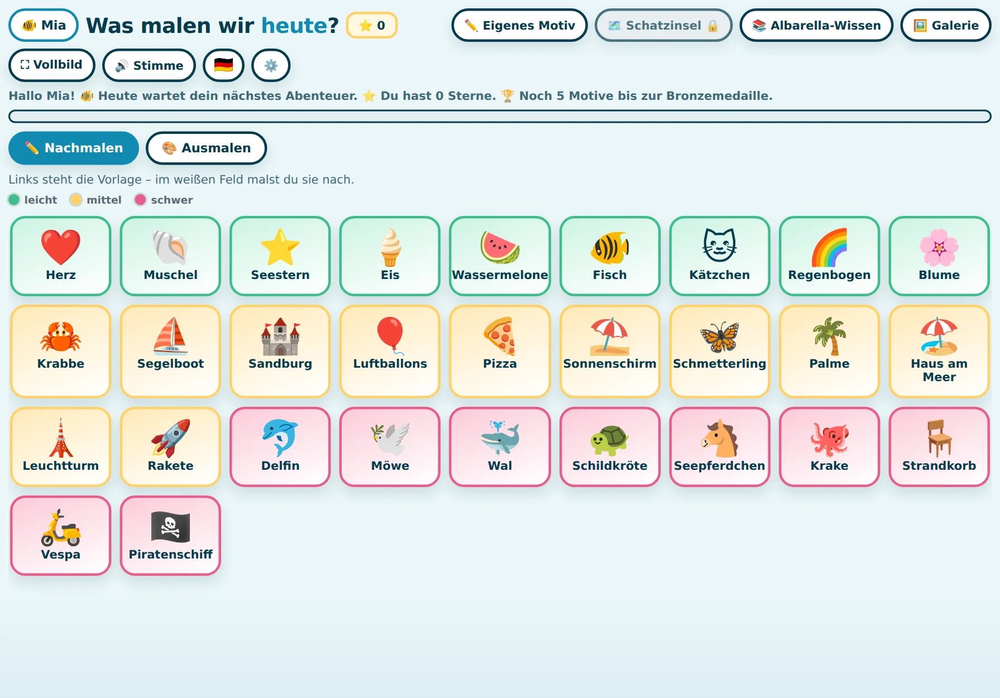
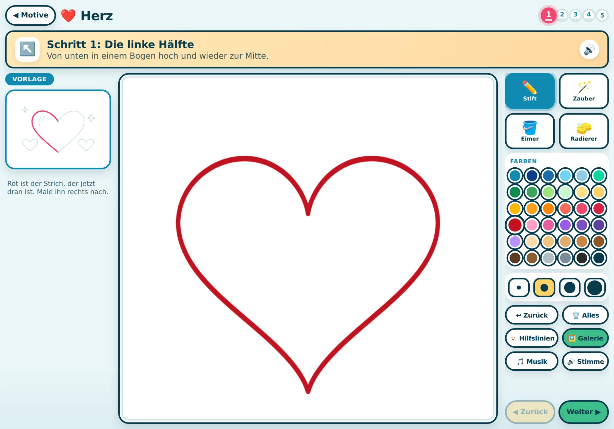
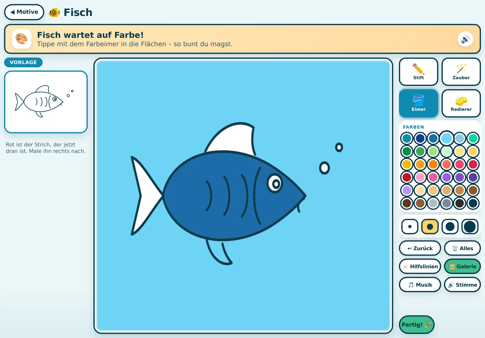
Version 7.46Vor 3 Wochen
Der Zauberpinsel erkennt jetzt auch Bögen und zieht sie glatt. Dazu die Schatzinsel mit zwölf neuen Fundstücken.
Beschreibung
Schritt für Schritt zum eigenen Bild. Links steht die Vorlage, in der Mitte das weiße Blatt – und die App sagt in einem Satz, welcher Strich als Nächstes dran ist.
Dreißig Motive in drei Schwierigkeiten, vom Herz bis zum Piratenschiff. Wer lieber färbt statt zeichnet, schaltet auf Ausmalen: Dann liegt der ganze Umriss vor, und ein Tippen füllt eine Fläche.
Die Linie wird unter der Hand ruhig, ohne dass das Kind es merkt – aus dem Zittern wird ein Bogen. Am Ende soll dastehen: Das hat mein Kind gemalt?
Jedes Kind hat sein eigenes Fach mit seiner eigenen Galerie. Alles bleibt auf dem Gerät: keine Konten, keine Werbung, keine Verbindung nach draußen.
Bewertungen und Rezensionen
Noch keine Bewertungen.
App-Datenschutz
Informationen
| Anbieter | Name, unter dem verkauft wird |
|---|---|
| Größe | 1,6 MB |
| Kategorie | Bildung · Kinder 6–8 |
| Kompatibilität | iPad, iPadOS 16.0 oder neuer |
| Sprachen | Deutsch, Englisch |
| Altersfreigabe | 4+ |
| Copyright | © 2026 … |
| Preis | Gratis |
| Datenschutzrichtlinie | Adresse einer Seite |
| Support | Adresse einer Seite |
Was an den Bildern echt ist: Alle neun Bildschirmfotos hat
tools/gen-store.js aufgenommen, indem es die drei Apps geöffnet
und bedient hat – das Mandala ist wirklich gefüllt, das Blatt wirklich
hervorgerieben, das Herz wirklich mit der Maus gezogen. Nichts davon ist
für diese Seite gezeichnet worden.
Was noch fehlt
Der Reihe nach, von dem, was man an einem Abend erledigt, bis zu dem, was eine Entscheidung braucht. Die Maße und Zahlen stammen aus den Dateien selbst; die Regeln des Stores ändern sich, deshalb vor dem Einreichen in App Store Connect nachsehen statt hier.
1. Text – je App auszufüllen
| Feld | Grenze | Mandala Atelier | Blatt | Malstudio |
|---|---|---|---|---|
| Name im Store | 30 Zeichen | „Mandala Atelier" · 15 | „Blatt" · 5 | „Malstudio" · 9 – oder „Sommer am Meer"? |
| Untertitel | 30 Zeichen | Entwurf · 22 | Entwurf · 26 | Entwurf · 29 |
| Werbetext | 170 Zeichen | fehlt | fehlt | fehlt |
| Beschreibung | 4000 Zeichen | Entwurf oben | Entwurf oben | Entwurf oben |
| Suchbegriffe | 100 Zeichen | fehlt | fehlt | fehlt |
| Neu in dieser Version | 4000 Zeichen | aus docs/fassungen.html ableitbar |
aus docs/fassungen.html ableitbar |
fehlt |
Der Name ist bei zweien schon entschieden, bei Malstudio nicht: Im
Manifest steht Sommer am Meer – Malstudio, auf dem
Homescreen steht Malstudio, und die Positionierung im
Projekt lautet „Zeichnen lernen durch Spielen". Drei Namen für eine App
sind einer zuviel – im Store steht am Ende einer.
Dasselbe bei Blatt: Blatt – Atelier 3.0 ist ein Name für
innen. Wer den Store liest, kennt kein Atelier 2 und keine Gegenprobe.
2. Bilder – gemessen, nicht geschätzt
- ✗
App-Symbol 1024 × 1024, ohne Alphakanal.
Alle drei Symbole liegen als 512 × 512 vor und haben alle drei
einen Alphakanal (nachgemessen: Farbtyp 6, RGBA). Apple nimmt das
Store-Symbol nur als undurchsichtiges Quadrat an. Bei Atelier und
Blatt sind die Ecken schon deckend – da genügt Vergrößern auf 1024 und
das Entfernen des Alphakanals. Malstudios
icon-512.pnghat durchsichtige Ecken und wäre so abgelehnt; das dazugehörigeicon-mask-512.pngist das quadratische und die richtige Vorlage. Ihre Symbolwerkzeuge (tools/gen-icons.js) können 1024 mit erzeugen. - ✗
Bildschirmfotos im verlangten Maß.
Die neun oben sind 1791 × 1251 – das Maß, in dem entwickelt wird,
nicht das, das der Store verlangt. Gefordert sind Fotos für ein
iPad 13" (2064 × 2752) und, wenn die App auch aufs iPhone soll, für ein
iPhone 6.9". Zu ändern ist dafür eine Zeile in
tools/gen-store.js– das Maß steht dort oben. - ✓ Das Material trägt. Die eigentliche Frage bei Bildschirmfotos ist, ob eine App auf einem kleinen Bild überhaupt etwas hermacht. Sehen Sie oben nach: Beim Atelier und bei Malstudio sofort. Bei Blatt ist das erste Foto blass – das ist keine Schwäche des Fotos, sondern der Punkt der App („es kommt erst unter der Hand"). Für den Store müsste das zweite oder dritte Foto zuerst stehen.
- ✗ App-Vorschau (Video), freiwillig. Bei Blatt wäre es fast Pflicht: Der Reiz ist eine Bewegung, und die zeigt kein Standbild.
3. Konto, Recht, Fragebögen
- ✗ Apple Developer Program. Kostenpflichtig pro Jahr, und ohne Mitgliedschaft geht nichts in den Store. Wer als Person eintritt, steht mit seinem Namen im Store; wer als Firma eintritt, braucht eine.
- ✗ Datenschutzerklärung als erreichbare Adresse. Pflichtfeld, auch wenn nichts erhoben wird – dann steht eben das darin. Kann eine schlichte Seite neben diesen hier sein; GitHub Pages liefert sie ohnehin aus.
- ✗ Support-Adresse. Ebenfalls Pflicht, ebenfalls eine Seite oder eine E-Mail-Adresse.
- ✗ Fragebogen zur Altersfreigabe und zum App-Datenschutz. Beide werden in App Store Connect beantwortet, nicht in der App. Bei allen dreien lautet die Antwort „keine Daten erfasst" – das ist selten und ein Verkaufsargument, das man in die Beschreibung nehmen sollte.
- ✗ Bei Malstudio: die Kinder-Kategorie. Dort gelten strengere Regeln – keine Analysewerkzeuge, keine Werbung Dritter, und Links nach draußen (etwa in Einstellungen) müssen hinter einer Elternschranke liegen. Die App ist ohnehin so gebaut; nachzusehen wäre, ob irgendwo ein Weg nach draußen führt. Die Hausregel „keine geschützten Marken- oder Comicfiguren" steht schon in deren Projektanweisung und gilt hier doppelt.
4. Die eine große Hürde
Alle drei sind Web-Apps. Sie liegen über Safari auf dem Homescreen, laufen im Vollbild und ohne Netz – aber sie sind keine iPad-Programme, und der App Store nimmt keine Web-Adressen an. Wer sie dort haben will, muss sie in einen nativen Rahmen setzen. Und genau dagegen steht Apples Richtlinie zur Mindestfunktionalität (4.2): Eine Anwendung, die nichts weiter tut, als eine Website anzuzeigen, wird abgelehnt.
Das ist keine Formalie, die man mit einem besseren Antrag löst. Es sind drei Wege, und sie kosten sehr Verschiedenes:
- ✓ So lassen. Die Apps liegen bereits auf dem Homescreen, starten im Vollbild und arbeiten ohne Netz. Für die Familie und für Testpersonen mit einem Link ändert der Store gar nichts. Kostet nichts und ist heute schon fertig.
- ? Nativer Rahmen mit echten nativen Zutaten. Ein kleines iPad-Programm, das die Web-App enthält und ihr etwas gibt, das eine Website nicht kann: Apple-Pencil mit echtem Druck, Sichern in die Fotos, Teilen, Drucken über AirPrint, Ablegen in iCloud. Bei Blatt wäre der Pencil-Druck sogar mehr als eine Eintrittskarte – dort trägt bisher allein die Geschwindigkeit die ganze Ausdruckskraft, und ob der Bildschirm überhaupt etwas Druckähnliches meldet, ist eine offene Frage dieses Projekts (siehe die Prüfseite). Der Rahmen ist übersichtlich; die nativen Zutaten sind die eigentliche Arbeit.
- ✗ Neu schreiben. Als richtiges iPad-Programm. Am teuersten, und es würde alles aufgeben, was diese Apps heute leicht macht – eine Datei ändern und neu laden.
Der ehrliche Schluss: Was auf dieser Seite an Text und Bildern fehlt, ist ein Abend Arbeit. Was fehlt, damit überhaupt eingereicht werden darf, ist ein natives Programm mit eigenem Wert – und das ist ein anderes Vorhaben als das hier. Diese Seite ist gebaut, damit man das sieht und nicht erst nach der ersten Ablehnung erfährt.